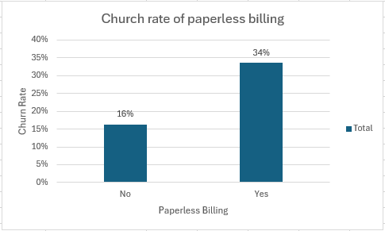

Telecommunication churn Analysis using Excel
What is Churning or Churn?
Churn, in a business context, refers to the rate at which customers or subscribers stop using a company’s product or service over a certain period. It is a critical metric for businesses, particularly those with subscription-based models or recurring revenue streams as it directly impacts revenue and growth.
Objective
In this project I will be analyzing the telecommunications business on when, why and who is likely to churn to avoid revenue decrement. I will do this by comparing the churn rate with average monthly recurring revenue (MRR).
Key Findings
Who is Churning?
With 7043 customers of this business 73% of the customers aren’t churning whereas 27% of the customers are likely to churn which can affect the business revenue.

Taking into consideration the employee’s contract type I will be analyzing which customers are more likely to churn. In this company the majority of the customers are on “month to month” contract at 55% of all the customers followed by “Two-years” contract at 24% and “one year” contract at 21%.
Churn Analysis by Contract:
When analyzing the churn rate of the employees based on their contract types I found out that employees that are on “month to month” contract are more likely to church by 42.71% with average monthly charges of $64,65 which I think it is because it is simple for them to churn with no consequences because they are not bound to long term contract and theirs monthly charges are high. Employees that are on a long contract are churning at 3.83%, which is way less than those of other contracts. Lastly one-year contract employes are being charged the most at $72.50 but churning at a low rate (11.27%)
Gender Analysis:
Gender does not have any impact when it comes to the churning of the customers as well as the average monthly charges.
Why are they Churning?
paperless billing Impact
In this telecommunications company someone who did not opt for paperless billing are likely to churn at a rate of 34% and those who opted for it their church rate is 16%.
In my Conclusion this is because older people which are people who have stayed with a company for too long aren’t familiar with the new technology means of paying and this results in them opting for other traditional companies that are still using paper billing method.
Tenure
About 1000 customers that have tenured with the company for a year are likely to churn due to high monthly charges that are very high.
There is a trend that shows that the higher the number of years the customers have been in the company they are charged less, and they are not likely to churn. And surprisingly customers that have been with the company for the longest (6 years) are charged a lot at $1490 but they are less likely to churn. This concludes that the longer the customers stay, the lower their chances are of leaving.